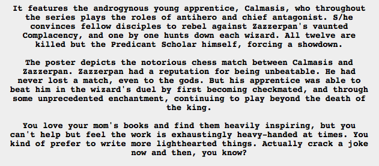

!!!!!!!
I went to go look up Calmasis’s name, since I remembered it began with “Cal” so I thought maybe it was a smush of Calliope’s and her brother’s names, and then I stumble on this.
I’d been operating on the assumption that Calmasis was either Calliope or Calliope and uu, but now it really looks like Calliope is Zazzerpan, who certainly appears to be both learned and complacent, and Calmasis is uu. Calliope had never lost a match to uu, but by some kind of ~enchantment~ (which turns out to be pestering and deception) uu managed to win even after a checkmate. It also makes sense that Calmasis=uu, since uu could make sense as an anti-hero and certainly as an antagonist.